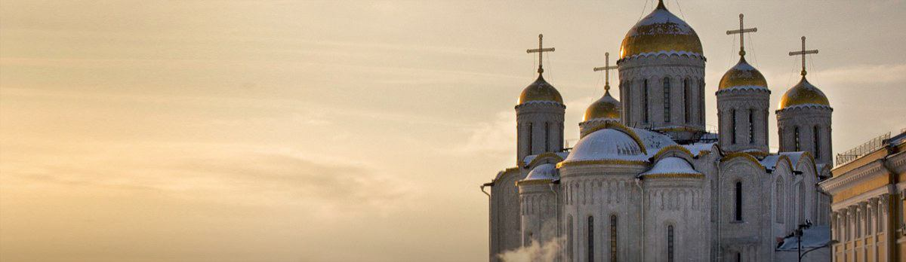
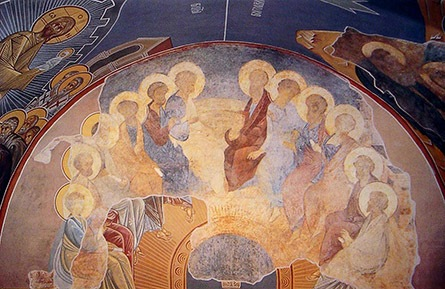
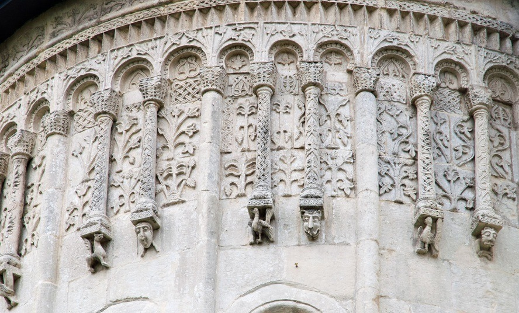
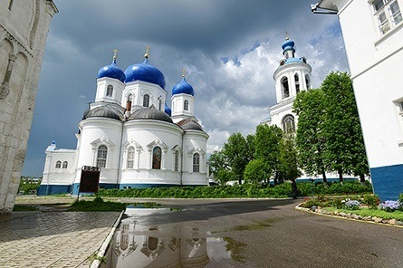
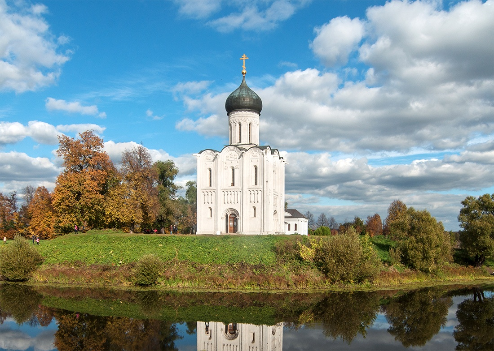
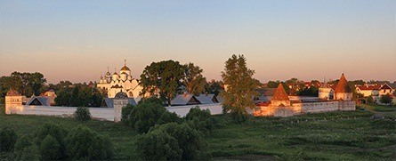

На сайте вы вносите предоплату для бронирования, оставшуюся сумму доплачиваете перед посадкой.

Скидки
За каждую поездку вам начисляется +1% скидки (до 10%).
Не стесняйтесь приводить своих близких и знакомых — если вы заранее забронируете место на 2+ человек, то получите скидку в 10%!
О Добропуте
За последние четыре года, по благословению о. Владимира Головина, сотни людей вместе с нами посетили самые главные места русского православия.
Мы также работаем с церковными приходами и организованными группами.
Отзывы о поездках
Вы можете посмотреть отчеты о последних поездках на наших страницах в социальных сетях:


Фрески Андрея Рублева
Мощи Андрея Боголюбского
Мощи Ефросиньи и Софии Суздальской
Владимирская область — наследница Владимирской Руси, яркая и богатая представительница исторического православия в России. Эта земля сохранила самые древние и при этом невероятно красивые храмы домонгольского периода, которые привлекают не только христианских паломников, но и туристов со всего мира, посещающих Владимир в рамках Золотого кольца. Наша программа состоит из эксурсий и участий в богослужениях.

Успенский собор
Белокаменное зодчество 12 века
Фрески Андрея Рублева
Успенский собор во Владимире был построен в 12 веке, после чего долгое время оставался главным храмом Древней Руси. История основания собора благоверным князем Андреем Боголюбским тесно связано с Владимирской иконой Богоматери. По преданию, князь похотил икону из Вышгорода, чтобы перевезти ее в Суздаль, но по пути во время сна ему явилась Богородица, повелевшая оставить икону во Владимире. На месте видения было основано село Боголюбово.
Первоначально украшением храма занимались иностранные мастера, присланные Фридрихом Барбароссой. В дальнейшем храм подвергся пожару и перестройке, а к окончанию ордынского ига для росписи были приглашены преподобные Андрей Рублев и Даниил Черный. Несмотря на прошедшие века, регулярные реставрации (например, по приказу Екатерины Второй старый иконостас был заменен на новый, выполненным в западном барочном стиле), части их работ все же сохранились.
 НазадДмитриевский собор
Белокаменное зодчество 12 века
Красивейшая резьба
Храм построен в сотне метров от Успенского собора князем Всеволодом Большое Гнездо во время расцвета Владимиро-Суздальского княжества. В отличие от Успенского, Дмитриевский собор создавался исключительно русскими мастерами.
 НазадСвято-боголюбский монастырь
Боголюбский монастырь Рождества Богородицы — женский монастырь в Боголюбово, находящийся на территории имения Андрея Боголюбского. Был основан уже после жизни убиенного князя, вероятно, из чувства необходимого искупления этого преступления. Впоследствии и сам монастырь пережил множество бед от набегов орды и польско-литовских панов, а в начале прошлого столетия был закрыт советской властью. В 1991 году монастырь вернули Церкви и началось возрождение обители. На сегодняшний день это самый крупный монастырь Владимирской епархии, где подвизаются более полутора сотен сестер.
 НазадПокров на Нерли
Чудотворная икона Покрова Богородицы
Основанный Андреем Боголюбским в середине 12 века Церковь Покрова на Нерли входит в число самых известных образцов православного зодчества России. Построенная на пересечении рек Нерли и Клязьмы, церковь получила название в честь праздника, который ранее не знал весь остальный православный мир — Покрова Пресвятой Богородицы.
 НазадСуздаль
Десятки старинных церквей
Мощи Ефрасиньи и Софии суздальских
Музеи деревянного зодчества
История Суздаля насчитывает тысячу лет, на сегодня этот небольшой город (15 км²) является жемчужинной Золотого кольца с более 200 памятниками архитектуры. И что характерно для всего древне-русского наследства, подавляющее большинство этих памятников являются храмами и монастырскими комплексами.
 НазадБлижайшая поездка
∙ 24 февраля 2017 пятница ∙
1 день
07:00 отъезд
м. Лермонтовский-проспект
12:00 Владимирские соборы
14:00 экскурсия в Суздале
16:30 трапеза в монастыре
17:00 экскурсия в село Санино
18:30 ночлег в Боголюбово
ночная литургия
2 день
07:20 Божественная литургия
09:30 трапеза
10:00 экскурсия по монастырю
11:00 экскурсия Покров на Нерли
14:00 отъезд в Москву
19:00 возвращение в Москву
м. Лермонтовский-проспект
Цена
2000₽
+1500₽
Проживание, питание, экскурсии
Расписания поездок
К сожалению, по данному маршруту в ближайшее время нет поездок.
Но зато есть другие! Вы можете ознакомиться с ними ниже.
Оптина Пустынь
16-17 сентября
Дивеево
29-01 сен-окт
Толгский монастырь
7-8 октября
Связаться с нами можно
По телефону / WhatsApp +7(909)907-15-59
На сайте вы вносите предоплату для бронирования, оставшуюся сумму доплачиваете перед посадкой.
Скидки
За каждую поездку вам начисляется +1% скидки (до 10%).
Не стесняйтесь приводить своих близких и знакомых — если вы заранее забронируете место на 2+ человек, то получите скидку в 10%!
О Добропуте
За последние четыре года, по благословению о. Владимира Головина, сотни людей вместе с нами посетили самые главные места русского православия.
Мы также работаем с церковными приходами и организованными группами.
Отзывы о поездках
Вы можете посмотреть отчеты о последних поездках на наших страницах в социальных сетях: